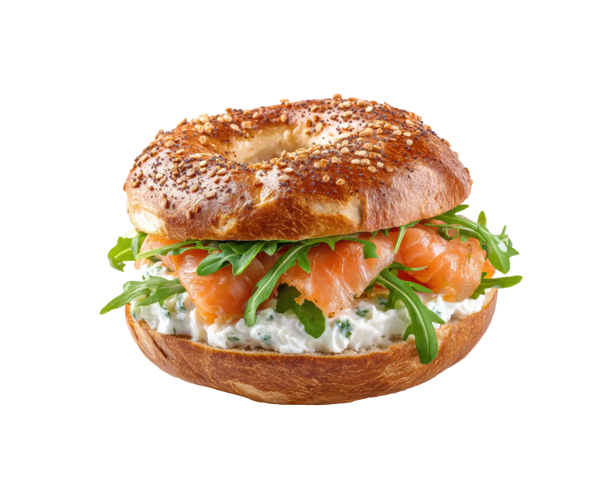

Bagel con Salmón
Tiempo: 10 minutos · Dificultad: Muy Fácil · Porciones: 1 porción

Preparación
- Corta el bagel por la mitad horizontalmente y tuéstalo ligeramente en tostadora o sartén hasta que quede dorado en los bordes.
- Unta una capa generosa de queso crema sobre la base inferior del bagel tostado.
- Acomoda las láminas de aguacate fresco sobre el queso crema.
- Distribuye las lascas de salmón ahumado por encima.
- Agrega las rodajas finas de cebolla morada, las alcaparras y unas ramitas de eneldo fresco.
- Sazona con unas gotas de jugo de limón fresco y una pizca de pimienta negra recién molida.
- Cierra con la otra mitad del bagel o sirve abierto listo para disfrutar.
¡Un desayuno o almuerzo exprés elegante, fresco y delicioso!
Tips de nuestra comunidad
Descubre recetas, combinaciones y secretos compartidos por otros amantes de la cocina. ¿Tienes un secreto de cocina?
Compártelo con la comunidad.
Mezcla el queso crema con un toque de cebollín picado y ralladura de limón antes de untar; realza enormemente el sabor del salmón.
Si sumerges las cebollas cortadas en agua fría por 5 minutos, pierden ese picor fuerte y quedan súper crujientes.